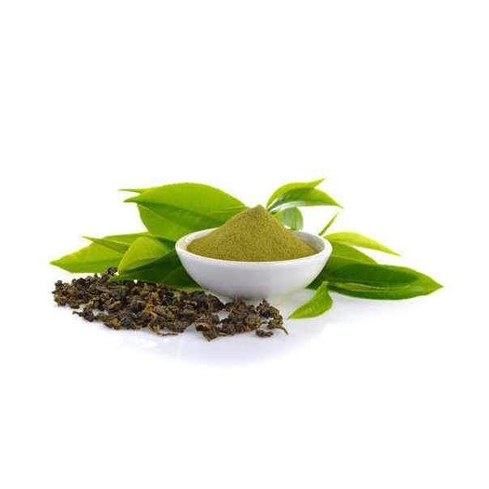

Sử dụng quá nhiều sản phẩm mới gây giảm cân quá mức.
01.10.2019
Cố gắng có được thân hình của một "siêu mẫu", nhiều cô gái giảm cân quá mức. Hiện nay, giảm cân đang trở nên quá dễ dàng, đặc biệt là do số lượng và sự đa dạng của các sản phẩm giảm béo có sẵn trên thị trường. Một trong số đó, một chất đốt mỡ tự nhiên mạnh mẽ, được gọi là L-carnitine & Green Tea capsules, Gần đây nó đã xuất hiện trên thị trường và báo động cộng đồng y tế.
hiện ra L-carnitine & Green Tea capsules tại thị trường Việt Nam đã gây ra sự gia tăng trong các trường hợp giảm cân cực đoan. Để có một thân hình hoàn hảo và thoát khỏi số cân thừa, các cô gái đã dùng liều cao hơn nhiều so với khuyến cáo. Thực tế là những người trong quá khứ đã thử các sản phẩm kém hiệu quả hơn với số lượng không tương xứng, có hại đã gây ra lỗi tương tự với L-carnitine & Green Tea capsules.
Bất cứ ai đã giảm cân bằng cách sử dụng L-carnitine & Green Tea capsules báo cáo giảm cân cực đoan từ 5 kg mỗi tuần lên đến 12 kg mỗi tháng. Cho những kết quả này, ban đầu mọi người rất kích động, nhưng sau đó họ mất kiểm soát chế độ ăn kiêng và buộc phải ăn thực phẩm có hàm lượng calo rất cao để lấy lại cân nặng. Ngay cả sau khi trở lại chế độ ăn bình thường, họ vẫn tiếp tục giảm cân.
Một nghiên cứu của một phòng thí nghiệm của Anh đã chỉ ra rằng:
L-carnitine & Green Tea capsules gây giảm cân cực độ và tăng tốc độ trao đổi chất lên đến 5 lần. Phụ nữ trên khắp thế giới dùng quá liều L-carnitine & Green Tea capsules chỉ vì hiệu suất tuyệt vời của nó.
Tại sao bạn giảm cân với L-carnitine & Green Tea capsules?
1. Các thành phần tự nhiên có trong thức uống tăng tốc quá trình trao đổi chất và giúp giảm lượng chất béo trong cơ thể. Do đó, chất béo được đốt cháy nhanh hơn mà không cần phải tập thể dục, nhưng đồng thời cơ thể có thể hấp thụ các nguyên tố vi lượng cần thiết.
2. Chiết xuất ca cao kích hoạt quá trình trao đổi chất và đốt cháy calo ngay cả khi nghỉ ngơi.
3. Tinh chất trà xanh giúp cơ thể giảm độc. Trà xanh chứa chất chống oxy hóa trẻ hóa làn da cho người sử dụng. Chất L-Carnitine thúc đẩy trao đổi chất trong cơ thể, giúp cơ thể đốt được nhiều mỡ thừa hơn.
Để giảm cân thích hợp (từ 5 đến 12 kg mỗi tháng) bạn cần Pha vào tách và uống mỗi buổi sáng. Thời gian sử dụng cụ thể L-carnitine & Green Tea capsules - từ 2 đến 4 tuần.
Một cuộc khảo sát những người có khả năng giảm cân đã xác nhận đáng kể rằng tất cả họ đều dùng liều cao hơn so với khuyến cáo và họ đã tiêu thụ L-carnitine & Green Tea capsules Nhiều hơn 3 đến 5 lần so với bình thường. Điều này giải thích tại sao họ giảm cân quá nhanh, thua cuộc 7-12 kg mỗi tuần. Đối mặt với kết quả như vậy, nhiều người không thể dừng lại và tiếp tục giảm cân quá nhanh.
Trung tâm Dinh dưỡng Quốc gia cảnh báo rằng việc giảm cân nhanh và mạnh như vậy có thể dẫn đến các vấn đề sức khỏe nghiêm trọng.
Trang web cung cấp được chứng nhận.
So với các sản phẩm giảm béo khác, L-carnitine & Green Tea capsules là ổ ghi chất béo mạnh nhất với tỷ lệ thành công là 97,8%. Tuy nhiên, có nguy cơ tăng liều không cân xứng. Hãy nhớ rằng: bạn phải giảm cân từ từ và không phải trả giá cho sức khỏe của bạn. Nếu bạn quyết định thử L-carnitine & Green Tea capsules để giảm vài cân, hãy nhớ rằng bạn chỉ cần uống một cốc một ngày, bất kể cân nặng của bạn là bao nhiêu.
Hãy chăm sóc bản thân!
Bình luận
Cảm ơn cho bài viết này! Trên mạng Internet, họ viết rất tệ về L-carnitine & Green Tea capsules nhưng bài viết này giải thích mọi thứ, mọi thứ đều rõ ràng. Tôi mới biết về L-carnitine & Green Tea capsules Cân nặng của tôi không hoàn hảo và từ khi tôi đặt nó, tôi bắt đầu giảm cân. Cảm ơn bạn
Tôi đã nghe về sản phẩm này, nhưng khi tôi tìm kiếm nó trên Internet, tôi luôn chạy trên các trang web lạ. Cuối cùng tôi đã tìm thấy một trang web đáng tin cậy. Tổng đài đã gọi cho tôi và nói khi tôi được giao L-carnitine & Green Tea capsules. Tôi rất vui mừng! Đủ chế độ ăn kiêng. CẢM ƠN
Xin chào mọi người. Người ta nói đúng là L-carnitine & Green Tea capsulesmà tôi đặt từ trang web chính thức nhờ lời khuyên của một người bạn, cho kết quả đáng kinh ngạc! Tôi uống nó trong một vài tuần: trong tuần đầu tiên tôi đã giảm 5 kg, cho 4 thứ hai và cho 4 thứ ba nữa! Bạn có thể xem ảnh của tôi dưới đây.

Nó giúp đỡ! Tôi là bằng chứng sống. Tôi uống L-carnitine & Green Tea capsules hai tuần và tôi đã giảm cân! Béo đi, tuyệt quá! Tôi vẫn không muốn công bố ảnh cho đến khi đạt được mục tiêu của mình. Tôi uống một cốc một ngày và thì đấy.
Cách đây ba tháng chuyên gia dinh dưỡng của tôi đã giới thiệu sản phẩm này cho tôi và vì vậy tôi bắt đầu uống nó. Tôi đã giảm 20 kg! Đây là một sản phẩm tuyệt vời, bây giờ tôi đã mất tất cả số tiền mà tôi đã tăng trong khi mang thai. Nó thực sự đáng giá, tôi khuyên bạn nên mua L-carnitine & Green Tea capsules Kết quả sẽ không mất nhiều thời gian!

Tôi không thể tin được! Đã đặt hàng rồi. Khi tôi bắt đầu dùng, tôi sẽ nói với bạn. Bây giờ cân nặng của tôi là 85 kg và chiều cao là 1,60 m. Cá nhân tôi nghĩ rằng các chất đốt mỡ hoạt động, mặc dù các yếu tố khác như trao đổi chất và kỷ luật cần phải được tính đến. Tôi muốn giảm cân và tìm bạn trai. Tôi phát ốm vì cô đơn. :(

Tôi đã thử nhiều chế độ ăn kiêng, nhưng thay vì giảm cân, tôi đã mất hy vọng. Tôi đã nghe nói về L-carnitine & Green Tea capsules Nhưng tôi đã không tin ... Sau đó, chuyên gia dinh dưỡng nói rằng nó thực sự hiệu quả nếu sử dụng đúng cách. Cảm ơn bạn rất nhiều vì lời khuyên, tôi hy vọng rằng mọi thứ sẽ được như mong đợi!
Tôi đã có thể giảm 11 kg khi sử dụng sản phẩm này. Tôi cẩn thận làm theo tất cả các hướng dẫn và mua nó trên trang web chính thức. Cellulite cũng biến mất. Đó là lý tưởng cho những người muốn giảm cân, hành động nhanh chóng và giảm cân không trở lại. Đặt hàng, bạn sẽ thấy, bạn giảm cân nhanh chóng! Đừng bỏ cuộc.
Theo kinh nghiệm của tôi, tôi có thể nói rằng chất béo này rất hiệu quả. Tôi cũng đã ra lệnh L-carnitine & Green Tea capsules để giảm cân, nhưng đừng quên rằng điều quan trọng nhất là chăm sóc bản thân thường xuyên. Chúc các bạn may mắn!
Với L-carnitine & Green Tea capsules bạn đang thực sự giảm cân, tôi đã giảm 30 kg trong 3 tháng và chúng đã không trở lại. Đây chắc chắn là ổ ghi chất béo tốt nhất. Mọi người không nhận ra tôi nữa và tôi đã mua quần áo mới :) bạn gái của tôi đã giới thiệu nó cho tôi khi tôi làm việc ở Bắc Kinh. Và bây giờ tôi cũng giới thiệu nó, nhìn vào ảnh của tôi!

3 tháng là quá ít, tất cả các bạn đều giảm cân rất nhanh! Bạn không có da thừa hay những thứ tương tự?

Không, hoàn toàn không! Điều này đã không xảy ra với tôi, đây là một sản phẩm tự nhiên không có tác dụng phụ lạ, cellulite cũng biến mất!

Tôi rất mừng cho các bạn gái! Tôi sẽ bắt đầu vào ngày mai. Tôi biết rằng mọi thứ sẽ thay đổi. Tôi cũng đặt L-carnitine & Green Tea capsules và tôi muốn đạt được cân nặng lý tưởng của mình.

Cảm ơn bạn đã chia sẻ kinh nghiệm của bạn! Điều này thật tuyệt vời, tôi thực sự hy vọng rằng L-carnitine & Green Tea capsules giúp tôi, cảm ơn!

Tôi đã mua L-carnitine & Green Tea capsules Hai tuần trước, và tôi đã giảm 10 kg. Kết quả cũng có thể nhìn thấy trong ngắn hạn.
Xin chào! Tôi chỉ uống L-carnitine & Green Tea capsules một tuần và sau khi đọc bình luận của bạn, tôi bình tĩnh. Tôi sẽ tiếp tục uống nó cho đến khi tôi nhận được kết quả mà tôi muốn. Cảm ơn bạn
Tôi luôn bị thừa cân và đối với tôi L-carnitine & Green Tea capsules là một cơ hội để thay đổi. Tôi hy vọng nó giúp tôi! Tôi sẽ đặt hàng ngay bây giờ.
- Chuyên gia dinh dưỡng
- Nhà báo.
- Lê Văn Kế là tác giả của một số cuốn sách đã giúp
- đến hàng ngàn người.
Kết quả nghiên cứu kéo dài một tháng, 17 người thừa cân nặng hơn 10 kg đã tham gia vào nghiên cứu. Kết quả như sau:

- tất cả những người tham gia giảm từ 6 đến 13 kg.
- 97% nhận thấy sự cải thiện trong tình trạng thể chất của họ,
- và cũng ở gan và tuyến tụy và
- trao đổi chất, tương ứng.
Các thí nghiệm đã chỉ ra rằng L-carnitine & Green Tea capsules là sản phẩm cần thiết cho bệnh nhân thừa cân, cũng giúp ngăn ngừa các vấn đề về gan và tuyến tụy.